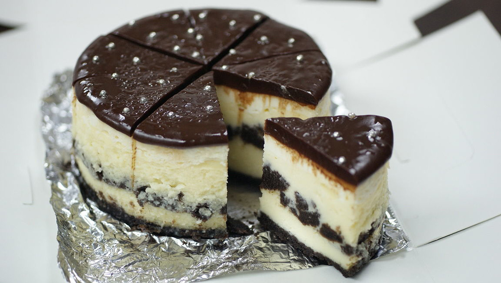

Chocolate Cheesecake

Description
A decadant and addictive Cheesecake that will have you crying for more.
Ingredients
- 2 cups chocolate sandwich cookie crumbs
- 2 tablespoons butter, melted
- ¼ cup packed brown sugar
- 1 teaspoon ground cinnamon
- 2 pounds cream cheese, softened
- 1 ¼ cups white sugar
- ⅓ cup heavy whipping cream
- 2 tablespoons all-purpose flour
- 1 teaspoon vanilla extract
- 4 eggs
- 1 ½ cups chocolate sandwich cookie crumbs
- 16 ounces sour cream
- ¼ cup white sugar
- 1 teaspoon vanilla extract
- 1 cup heavy whipping cream
- 1 ½ cups semisweet chocolate chips
Steps
- Combine 2 cups cookie crumbs, melted butter, brown sugar, and cinnamon in a medium bowl; firmly press mixture evenly onto bottom and 1 inch up sides of a 10-inch spring form pan. Bake at 350 degrees F (175 degrees C) for 5 minutes; set aside.
- In a large bowl, beat cream cheese until smooth. Gradually mix in 1 1/4 cups sugar, 1/3 cup whipping cream, flour, and 1 teaspoon vanilla. Beat in eggs, one at a time, beating after each addition. Pour 1/3 of batter into prepared pan. Top with 1 1/2 cups cookie pieces; pour in remaining batter.
- Bake at 350 degrees F (175 degrees C) for 45 minutes. Remove cake from oven. Combine sour cream, 1/4 cup sugar, and 1 teaspoon vanilla; spread evenly on cheesecake. Continue baking for 7 minutes. Turn oven off and leave in oven 30 minutes. Remove cheesecake, and let cool completely on a wire rack.
- Combine 1 cup whipping cream and chocolate chips in a saucepan; stir over low heat until chocolate melts, and then stir in 1 teaspoon vanilla. Pour mixture over cheesecake while still warm. Refrigerate until serving time. Should be at least 8 hours for refrigerator time, remove about 1/2 hour to 1 hour before serving, remove ring from spring form pan, decorate to choice and get out your fork!